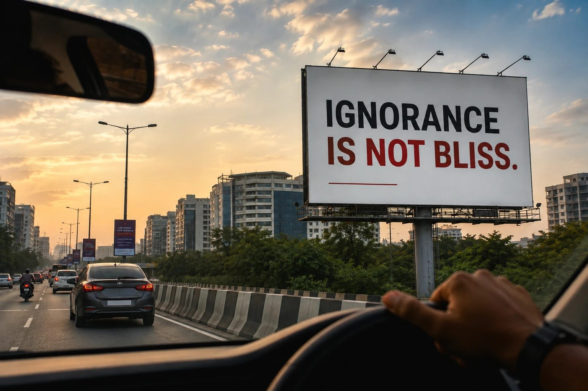

Ignoring Is Not Bliss

I drive around Hyderabad a lot. One thing I enjoy is reading the huge billboards across the city. Some make me smile. Some make me think. A few years ago, one billboard outside a well-known hospital caught my attention.
It simply said,
"Ignorance is not bliss."
I remember discussing those four words with many of my close friends over the years.
Yet, for some reason...
they came back to my mind again today.
The more I thought about it...
the more I felt that ignorance isn't our biggest problem anymore.
We live in a world overflowing with information. We know exercise is important. We know relationships need time. We know forgiveness brings peace. We know our family deserves our attention. We know our faith needs to be lived, not just admired. Most of us already know what is right.
The harder question is...
what am I doing with what I already know?
Life rarely changes because I learned something new.
More often...
it changes when I finally start living what I already knew.
Knowing isn't the problem.
Ignoring is.
And every truth I keep ignoring today...
quietly shapes my tomorrow.
What truth do I already know...
but keep postponing?
What have I been hearing for months...
yet still haven't started living?
If I already know what needs to change...
what am I still waiting for?